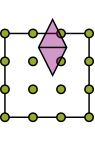
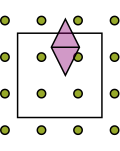

Lagrange interpolation
A Lagrange basis has one function for each interpolation node. At its own node that function is one; at the other nodes it is zero. Consequently, the interpolation coefficients are just the sampled function values.
For I2O, this means the coupling matrix contains kernel samples between the receiving and source grids. There is no additional sampling-matrix solve.
\[\ell_j(t_i)=\delta_{ij},\qquad f(x)\approx\sum_j f(t_j)\ell_j(x).\]
The identity at the nodes is exact; approximation between them depends on the function and the chosen nodes.
Choose the nodes
equidistant = MultilevelKernelInterpolation.BarycentricLagrangePolynomialEquidistant(dim=3, order=6)
chebyshev = MultilevelKernelInterpolation.BarycentricLagrangePolynomialChebyshev(dim=3, order=6)
chebyshev2 = MultilevelKernelInterpolation.BarycentricLagrangePolynomialChebyshev2(dim=3, order=6)Equidistant nodes give the regular grid needed by Toeplitz I2O. At high degree, however, interpolation can develop large oscillations: the Runge phenomenon. Increasing the degree is therefore not always an improvement.
Chebyshev nodes cluster towards the ends of the interval and avoid that particular equidistant-node difficulty. Use dense I2O with these families; their nonuniform grid does not support the Toeplitz route.
The first Chebyshev family uses interior roots; the second includes both endpoints. Here are all three grids, generated by their constructors:
using MultilevelKernelInterpolation, PlotlyJS
families = [
"Equidistant" =>
MultilevelKernelInterpolation.BarycentricLagrangePolynomialEquidistant(;
dim=1, order=6
),
"Chebyshev roots" =>
MultilevelKernelInterpolation.BarycentricLagrangePolynomialChebyshev(;
dim=1, order=6
),
"Chebyshev endpoints" =>
MultilevelKernelInterpolation.BarycentricLagrangePolynomialChebyshev2(;
dim=1, order=6
),
]
figure = Plot(
[
scatter(;
x=collect(MultilevelKernelInterpolation.range(p, 1)),
y=fill(k, 7),
mode="markers",
name=label,
marker=attr(; size=10),
) for (k, (label, p)) in enumerate(families)
],
Layout(;
template="plotly_white",
height=280,
autosize=true,
xaxis=attr(; title="Reference coordinate"),
yaxis=attr(; tickvals=[1, 2, 3], ticktext=first.(families)),
showlegend=false,
margin=attr(; l=155, r=20, t=20, b=50),
),
)
include(
joinpath(
pkgdir(MultilevelKernelInterpolation), "docs", "src", "assets", "code", "figures.jl"
),
)
figureWhat barycentric evaluation does
All three constructors use the barycentric formula to evaluate the basis. It avoids constructing monomial coefficients. It does not change the nodes or remove Runge instability from equidistant interpolation.
The methods are MultilevelKernelInterpolation.evaluateall1dpolynomial! and MultilevelKernelInterpolation.evaluateall1dpolynomialderivative!. The basis explorer uses the same nodes and basis conventions, checked against the Julia evaluator.
When support extends beyond the box
A tree assigns a basis function to a box, but the function's support may extend outside it. The sketch below shows such an function.

Lagrange polynomials can be evaluated outside their reference interval. This extrapolation retains the original grid, but may amplify errors. Another option is to enlarge the interpolation domain:

MultilevelKernelInterpolation.ScaledShiftedPolynomial wraps a basis with a scale and shift. The constructor expresses the sampling coordinates as x[d] * scaling + shift[d]. Neither enlargement nor extrapolation is a general cure for Runge instability.
Enlarging the domain also brings the sampling points closer to other boxes. MultilevelKernelInterpolation checks their separation during construction with MultilevelKernelInterpolation.checkprotrusionsafety. The coordinate mapping itself is described in the basis introduction.